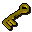
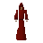

Golden key

| Config name | pipkey_gold |
| Item id | 2944 |
| Value | 300 gp |
| Weight | 10g |
| Members | Yes |
| Tradeable | No |
| Stackable | No |
| Defined in | scripts/quests/quest_priestperil/configs/priestperil.obj |
Golden key
A replica key made of solid gold.
Dropped by
| NPC | Level | Quantity | Rarity | Via | Notes |
|---|---|---|---|---|---|
 Monk of Zamorak | 30 | 1 | Always |
Quests
Referenced in scripts
scripts/areas/area_mausoleum/scripts/monuments.rs2scripts/quests/quest_priestperil/scripts/evil_monks.rs2scripts/quests/quest_priestperil/scripts/priestperil_journal.rs2scripts/quests/quest_priestperil/scripts/trapped_drezel.rs2